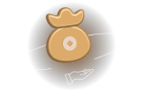

元宇宙的经济入口 通往虚拟世界的信任桥梁
全球首个去中心化OTC交易所
全球首个去中心化OTC交易所
去中心化OTC交易所
去中心化币币交易所
去中心化借贷交易所
去中心化合约交易所
链上理财赚币
DID去中心化身份系统
去中心化应用系统
EOTC NFT
EOTC 元宇宙
EOTC DAO

EOTC是全球首个去中心化的OTC交易所，是通往虚拟世界的信任桥梁，是未来元宇宙的经济入口。
中心化交易所存在安全、监管、作恶等问题，去中心化交易所从技术上有天然信任基础。但去中心化交易所由于隐私、KYC、交易纠纷、黑钱冻卡等问题困扰，无法实现链上资产与线下资金的去中心化汇兑。
直到EOTC采用强关系链DID解决KYC问题、采用多签放币和DAO仲裁解决交易纠纷问题、采用六大技术创新解决黑钱冻卡等问题，OTC才第一次以去中心化的方式发生交易。用户终于可以第一次在安全稳定信任的交易环境中实现去中心化OTC交易，尤其是资产控制权始终在普通用户自己手里。对于去中介与无需信任第三方的理念而言，EOTC去中心化OTC交易所是加密世界中必不可少的一环。
EOTC在各大公链上布署智能合约，如以太坊、波场、币安智能链、AVAX、POLYGON、SOLANA、RONIN、OK智能链、火币智能链等公链上搭建去中心化OTC交易所。EOTC将会不断增加各国语言和法币交易如CNY中国人民币、USD美元、AUD澳大利亚元、JPY日元、KRW韩元、EUR欧元、CAD加元、INR印度、SGD新加坡元、MYR马来西亚、THB泰铢等。
EOTC将会不断增加各种主流币种如：USDT、USDC、BUSD、USDK、BTC、ETH、TRX、BNB、HT、OKT等。EOTC的去中心化OTC交易所由于有技术创新优势，有全球第一的首发优势，有着强大的竞争力和无限发展潜力。
显示更多
去中心化币币交易所

EOTCSWAP去中心化币币交易所建立在各个公链上的自动做市交易协议，期望为大家建立一个无需信任及高度去中心化的金融基础设施。
EOTCSWAP支持任何个人用户在EOTCSWAP上发行代币并创建相应的资金池，平台鼓励各方参与者在同一资金池内进行交易兑换，并对流动性提供者给予相应的交易手续费。当资金池中的汇率和更大盘的市场不一致时，存在套利空间，此时套利交易者通过搬砖可以把这些价差抚平，使其与大盘保持一致的汇率。
EOTCSWAP采用自动做市商（AMM）模式，即在一个智能合约中放入两种一定数量的加密资产，基于自动做市商算法即可自动计算出代币的交易价格。算法要点是兑换的两种资产数量的乘积维持为一个常数，即恒定乘积做市商。用公式表示就是X*Y=K，X和Y是流动性池中的代币数量，K是乘积。要想保持K恒定，X和Y只能相互反向变动。
当AMM中的代币价格向任何方向上发生偏离时，流动性提供商质押的代币会损失价值，这种风险被称为（无常损失）。EOTCSWAP将为交易用户提供更多流动性选择。
显示更多
去中心化借贷交易所

EOTC去中心化借贷交易所是建立在多个区块链公链上的去中心化借贷协议。EOTC旨在构建一个多币种利率市场化的货币市场，为不同币种相互融通提供一个安全、稳定、信任的交易环境。
EOTC是基于公链上的一个协议，用于建立基于资产的供求变化，以算法计算得出利率的资金池。资产的供应方和贷款人直接与协议进行交互，从而赚取或支付浮动利率。
EOTC协议试图通过货币市场系统解决流动性问题，并且当前大多数加密货币闲置在交易所与钱包中，资产所有人并没有相应的利息。
显示更多
去中心化合约交易所

EOTC去中心化合约交易所是一套允许任何金融产品发行和交易的协议，EOTC采取离链订单和链上撮合，以创建有效的市场。所有描述和协议都是公平公正公开透明，不受中央机构管辖的。
协议可由任何人扩展，不需要特殊权限与其他智能合约。EOTC代币主要用于社区投票治理和手续费折扣。EOTC是一个去中心化的永续合约交易所，交易所在多个区块链公链上运行，并且提供现货、杠杆、借贷服务。
EOTC利用混合基础设施模型，主要为非托管、链上结算和带有订单簿的链下低延迟匹配引擎。
显示更多
包括存币宝、挖矿宝、质押赚币、C2C借贷、DEFI服务等产品，为用户提供丰富的产品选择。
赚币的收益分为存入代币的利息和挖矿奖励。参考年化是存入代币的利息年化，综合年化指利息年化和挖矿年化的相加之和，两种年化都会实时浮动，不同项目的实际收益取决于链上挖矿的实际效率。
申购不同的产品时，开始计算、发放收益的时间可能不同。
资金成功上链后开始计算收益（因链上操作可能有延迟，以资金实际上链的时间为准）。
EOTC仅提供第三方DEFI平台项目信息展示、数字资产上下链、奖励领取和发放服务，不对用户的数字资产进行管理，EOTC不承担任何由于合约漏洞、黑客事件、第三方DEFI平台暂停、终止业务、倒闭，非正常的暂停或停止交易等潜在风险造成的资产损失。
显示更多
DID去中心化身份系统
DID属于统一资源标识符URI的一种，是一个永久不可变的字符串，它存在的意义有两点，第一，标记任何目标对象(DID Subject)，可以是一个人、一件商品、一台机器或者一只动物等等；第二，DID是通过DID URL关联到描述目标对象的文件（DID Document,简称DID Doc）唯一标识符，即通过DID能够在数据库中搜索到具体的DID Doc。
创建一个DID Document的过程是Production,而将创建的这条Document引用至该DID Subject其他DID创建过程则是Consumption。在验证过程中，每个DID对应的DID Document是独立的，相当于对每个DID做了信息隔离。在验证过程中，DID持有人可以根据需要对不同DID授权，验证人只能阅读到被授权的DID Doc，而无法获得更多信息，从而达到DID Subject的信息保护目的。
显示更多
去中心化应用系统

EOTC将搭载可以无限扩张的存储链，类似于IPFS系统，里面包含了存储地址持有人的标签化信息（性格、购物偏好、住址等真实个人信息）。使用钱包地址加密，只有本人使用私钥才可以打开，授权给商家使用，保证了自己的隐私安全。
EOTC搭载了可以无限扩张的SAAS系统，类似于CRM客户关系管理系统。
SAAS免费提供给任何行业的商家使用，EOTC将上亿持币地址背后的真人引流给了线下的无数商家，EOTC将价值无限。
显示更多
NFT英文全称为Non-Fungible Token,翻译为中文即为：非同质化代币，具有不可分割，不可替代，独一无二的特点。例如加密猫，token化的数字门票或艺术品等等
NFT 是基于区块链的私有财产，它完全由用户控制，可自由转移和交易。
EOTC NFT主要应用在游戏、艺术品、域名、收藏品、虚拟资产、现实资产、身份等方面。其中目前发展最为迅速的是游戏、艺术品以及域名等。
EOTC NFT将打造了视觉艺术，音乐，混合数字艺术等多个板块。
EOTC NFT将对知识资产的确权、对创作者的激励、游戏内经济体系等不生态产生正面积极的影响。
显示更多
EOTC 元宇宙

元宇宙不是互联网的未来，而是人类的未来。
未来芯片技术、网络通信技术、虚拟现实技术（VR/AR/MR/XR）、游戏技术（游戏引擎、游戏代码、多媒体资源）、AI人工智能技术、区块链技术的高速发展，从技术层面上有了极其强大的算力和算法，足以支撑庞大的元宇宙运作。
元宇宙是物理世界在虚拟世界数据化的复刻和升级。
人们可以在元宇宙逛街吃饭发朋友圈，还可以完成真实世界里不能实现的野心，比如瞬时移动。
元宇宙作为一种未来媒介，能够成为比现存任何封闭系统都更高效的引擎，推动经济效率提升。
颠覆和改变传统的生命概念、时空概念、能量概念、族群概念、经济概念、和价值观。
元宇宙的独角兽会成批地出现在世界500强的公司榜单中，元宇宙里新行业、新模式、新工种将层出不穷，工作机会将是物理世界的N倍，元宇宙将诞生数量多到难以想象的财富故事。
EOTC凭借着区块链技术布局，将会成为未来元宇宙主要的经济入口。从技术、硬件、资本全面赋能元宇宙生态。
显示更多
EOTC DAO

EOTC Decentralized Autonomous Organization是为了治理EOTC所有项目而设立的区块链社区。
EOTC DAO 允许任何持有一定EOTC代币的人通过提案和投票等方式，对EOTC的所有项目进行治理和仲裁。
EOTC DAO通过各种方式达成共识，努力保持EOTC为用户提供安全、稳定、信任的产品和服务。
EOTC DAO才是EOTC真正的主人，每一位持有EOTC代币的人都是EOTC的股东，都享有EOTC的所有权益。
EOTC DAO是由达成同一个共识的群体自发产生的共创、共建、共治、共享的协同行为。
EOTC DAO中的运转规则、参与者的职责权利以及奖惩机制等均公开透明。实现权力下放、公共决策、资金共管、决策共治、收益共享。
显示更多